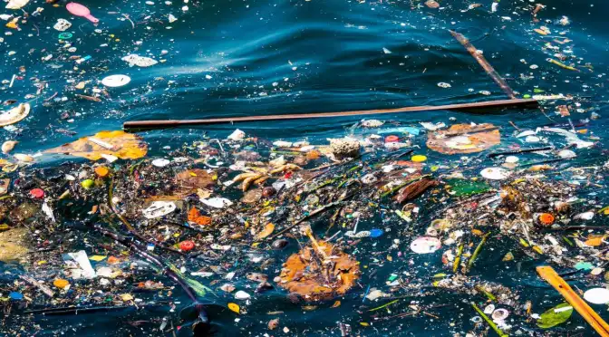
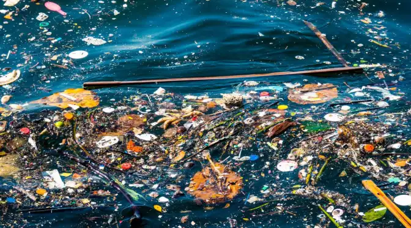
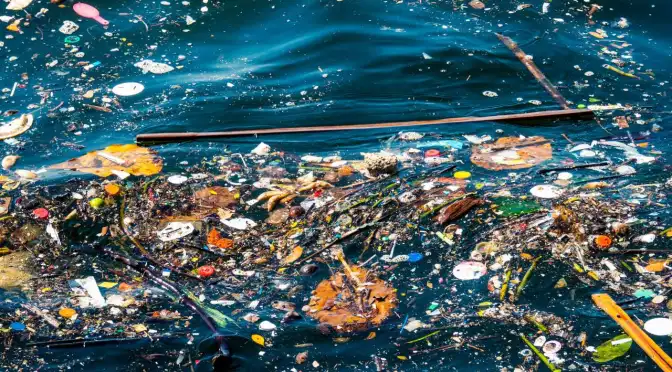
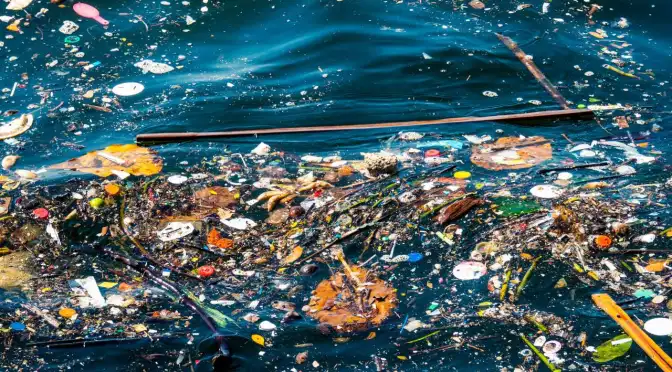

कारखान्यांमधून निघणारे जळूण, रासायनिक वायू आणि अपशिष्ट पाण्यामुळे पाण्याला प्रदूषण होते.
शेतीमध्ये वापरण्यात येणारी कीटकनाशके आणि खाद्यपदार्थ पाण्यात मिसळल्यास जल प्रदूषण होते.
: घरांमधील नाले आणि पाण्याच्या स्रोतांमध्ये थेट कचरा टाकल्यामुळे पाण्यात विविध हानिकारक पदार्थ मिसळतात.
: प्लास्टिकच्या वस्तू जलाशयात टाकल्यास पाणी प्रदूषित होते आणि जलीय जीवनाला धोका निर्माण करतो.
1. जलाशयांमध्ये कचरा टाकण्यास मनाई करणे.
2. प्लास्टिकचा वापर कमी करणे.
3. औद्योगिक कचरा योग्य पद्धतीने व्यवस्थापित करणे.
4. जलसंवर्धनाचे महत्व शिकवणे.